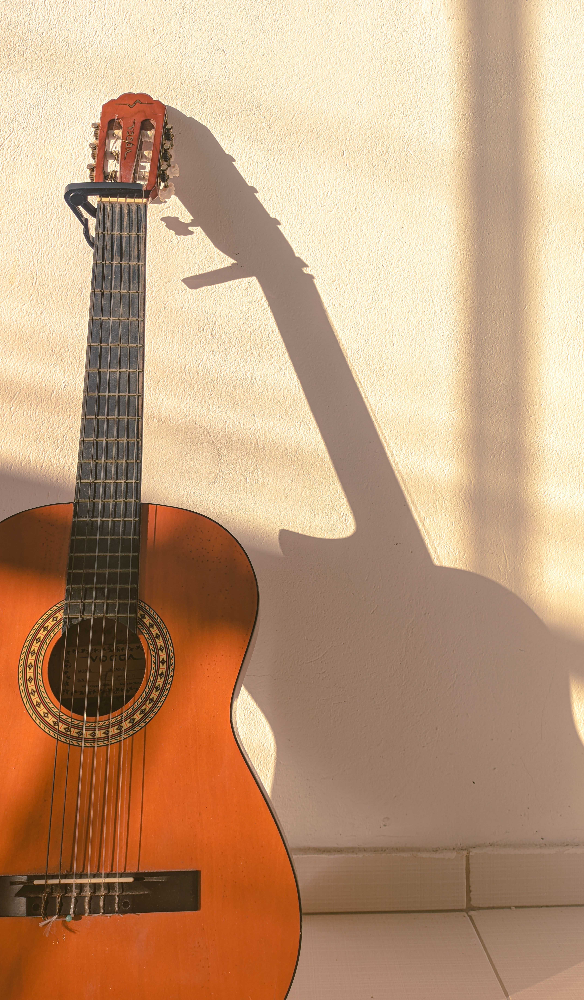

Bienvenido a mi web, donde hablo sobre el mundo del flamenco y la guitarra
Soy Antonio y toco la guitarra flamenca. Conozco bastante sobre este mundo.
En esta web quiero compartir distintos tipos de guitarras, accesorios y biografías de guitarristas.

La guitarra me ha ofrecido la capacidad de poder expresarme con el resto del mundo sin utilizar la palabra.
La barriga se sacia rápido, el espíritu no se sacia nunca.
— Paco de Lucía
Marca: Ritmo Tipo: Española Precio: 399,99 €
© 2026 Antonio Serrano - Guitarras Serrano